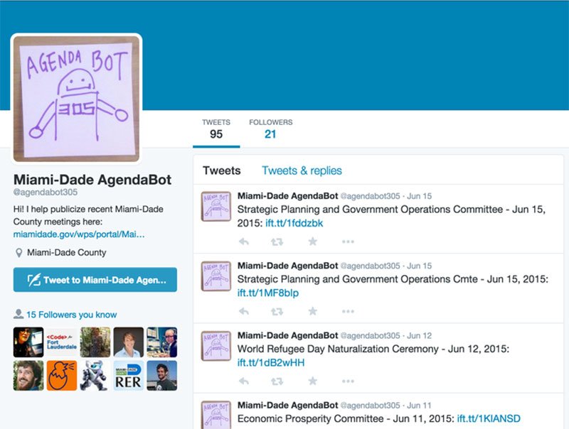

The Fellows

June 2015
Contributors:
The 2015 Fellowship team in Miami-Dade County is working with the Regulatory and Economic Resources (RER) and Community Information and Outreach (CIAO) departments to help improve service delivery throughout the County.
By improving access to government services, and by utilizing the data collected from interactions, we hope to make it easier to communicate user experiences and needs to government staff. We hope the same data will help illuminate potential process improvements.
This year, Miami-Dade County became the first government within Florida, our country's third most populous state, to host a Code for America fellowship. The County governs over 2.5 million people, split between 34 municipalities and and a sprawling unincorporated area.
Additionally, over a third of its residents are not comfortable speaking English. As a result, creating clear channels of communication between the County and its citizens is complex, and overall civic engagement in the County is relatively low.
Since the Regulatory and Economic Resources (a “super-department” that resulted from the Mayor's consolidation of 12 departments into one) was our fiscal sponsor at the County, our work is focused on improving citizens' ability to access and communicate with one of the County's largest and most complex services: building and permitting. While the status quo is working to some degree for large contracting firms and building permit consultants (also called permit runners), there is a limited amount of accessibility for those who cannot afford to hire a professional. The avenue for them to voice their viewpoint leaves a lot to be desired.
From our initial research, we've discovered that most residents are not able to successfully acquire a building permit without hiring a building permit consultant. Through process and technological improvements, we hope to design a more intuitive and simple way for residents to obtain a building permit, and find ways to help the County meaningfully collect customer satisfaction feedback.
While our work focuses exclusively on the building and permitting process, we believe that our work can set an example for other departments and services within the Miami-Dade County government to create more accessible and user friendly services built to promote customer satisfaction.


Our research in Miami-Dade County began by speaking with numerous County departments, as well as community groups and small businesses. We spent the most time in the Permitting Inspection Center and going on ride-alongs with building inspectors and zone compliance officers. In that time, we started to see where the pain points were, not only for the people using County systems but also for County employees.
When we learned that the County was already investing heavily in procuring a new software system, we decided to widen our scope and explore other projects that fell under the Department's economic development umbrella. At the end of our research month we had with a long list of over one hundred projects including but not limited to: a workforce development application for libraries, real time transit tools, commissioner agenda item notifications and a super-powered parcel lookup application.
After paring down our project list, we began to research and test out how some of them might work. To date, our approach has been to leverage previous Code for America work to produce quick projects that could benefit the County. By creating some quick wins, we are laying the path for our main project, which will help the County improve their internal processes and become more client-oriented.
Ultimately, we decided to focus on improving how the County collects feedback, starting with a pilot in the Permit Inspection Center (PIC). The PIC is the center of all building and permitting transactions within Miami-Dade County, including: housing plans reviewers, inspectors, and the customer service agents who work with the public.
Currently, feedback about a resident's experience with obtaining a permit can only be given via a paper form in person. The forms are only offered in English, which is at odds with a largely Spanish-speaking population. The survey is mostly geared towards evaluating front-line staff, rather than the process as whole. The overwhelmingly positive ratings, combined with the fact that most people leave their name and number, suggests that these forms are being used to help expedite permit approvals. Finally, there is no meaningful feedback loop, as these forms are no longer being analyzed and used to inform the permitting process, due to lack of staff time.
Our strategy is to make the process more accessible to the client by allowing the feedback to be left in digital formats, which will be available in both English and Spanish. In an effort to get the form in front of more customers, we are going to place links to the surveys at the bottom of relevant forms, on information cards handed after submitting an application and on key department web pages.
We also are designing the feedback collection process to be streamlined into staff's workflow so that it does not become a burden. We are doing this by automating the survey creation process, creating a simple tool to easily edit the content of the surveys, and creating a dashboard to display the results of the surveys with other relevant behavior metrics. We'll also be creating a public version of this dashboard to close the feedback loop and make clients' feel their voices are heard.
We decided to explore the Short Term Event Permitting (STEP) process as a prototype for how to streamline a complex, multi-departmental permit that many residents apply for. To do this, we facilitated a design exercise in mid-April, where stakeholders came together to brainstorm ways to improve the process for how a resident or business obtains a short term event permit. Stakeholders included representatives from the PIC, Miami-Dade Police, Miami-Dade Fire and Rescue, and Public Works among others.
Most surprisingly, we learned that while all of the stakeholders were involved in the STEP process, many of them had never met each other, or considered how their part of the permit process fit into the larger customer’s experience.
The design exercise resulted in information we used to produce a guide to help people going through the short-term events permitting process for the first time. Our hope is to continue iterating on both the content and the format.
Before: Permitting Procedures for Short Term Events - an existing pamphlet used by the Miami-Dade Building department. After: The User Guide to Short Term Events Permitting in the Miami-Dade Unincorporated Municipal Service Area
Our municipal partner officially launched an open data portal during Miami’s CodeAcross event in February. Separately, Code for Miami (the local Brigade) had launched a petition from the local tech community, calling on Mayor Giménez to enact an open data policy. We advised on best practices for both policies and implementation of portals.
As Fellows, we continue to facilitate conversations between county employees, city employees, entrepreneurs of all scale and engaged citizens to show how opening up public data sets can directly benefit people doing (or wanting to do) business in Miami-Dade County. We are also working to open up and automate the updates on datasets that we use in our work, and assist in developing a data standard for building departments around the country.
To build support for taking data-driven approaches and understanding resident needs, we launched the Code for America City Analytics Dashboard during our research trip to Miami. This dashboard, created by the Code for America tech team, allows government staff to easily view live information on how the public is interacting with their website.
We launched Am I In Miami, a spin-off of the Am I In Las Vegas app built by the 2013 Las Vegas Fellowship team. This takes the same concept of helping users understand jurisdictional boundaries by allowing them to enter an address and find out whether they are in UMSA or one of the 34 municipalities in the County.
The next goal for this project is to map which jurisdiction is responsible for key services for those users. This project is important because approximately 1.2 million people live in unincorporated Miami-Dade, but have Miami city postal addresses, while some municipalities contract out their services to the county. The goal of this project is to help eliminate confusion and help residents understand where to inquire about public services.
We also created the Miami-Dade Census-based APIs to distinguish between UMSA and municipalities; a localization of the US Census API built by CFA which takes a shapefile and creates web services for developers to easily find what municipality you’re in.
We built an app called AgendaBot 305, which sends out a tweet out whenever a recording of a public meeting is made available. This app helps address some citizen complaints about lack of transparency around legislation decisions being considered at County Commissioner meetings.
CIAO (the Communications Information and Outreach department) manages County website and 311 services. Using Code for America best practices, we helped CIAO edit the templates that control the 311 Knowledge Base, so that information about the Miami-Dade Animal Services Department's spay and neuter policies is delivered in the most user-friendly way possible.